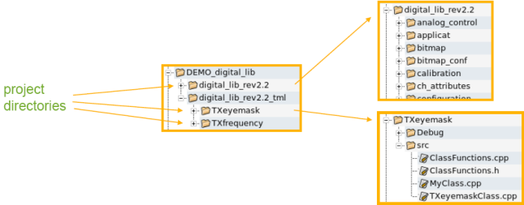
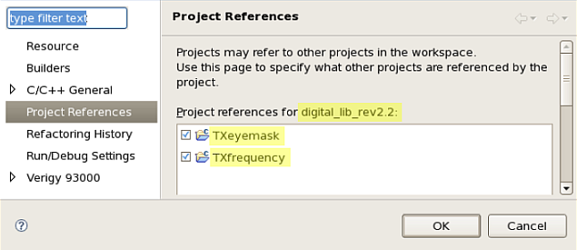

About projects, file system, and references
Project files, created within SmarTest, reside in project related directories of the file system. Workspace related data, like configuration files, reside in the workspace directory.
General recommendations
- Make sure that the workspace directory is not located inside a project directory and vice versa.
- Keep device projects and test method projects in separate directories but together in a main projects directory.
- If your device project is named <device>, name the related test method projects directory <device>_tml.

You will reference your device projects to test method projects. That means that projects depend on each other.
Relation between workspace and device
When you close a workspace, SmarTest remembers the device that was loaded into this workspace.
When loading this workspace again, SmarTest loads it with the device that was loaded with it before it was closed the last time.
When referenced projects are not imported yet, SmarTest issues a warning, see Warning and error message when starting SmarTest.
To check the referenced projects in an opened workspace:
- On the menu click
- In the filter field type Project Reference

Functional changes
- Introduced before SmarTest 6.3.2